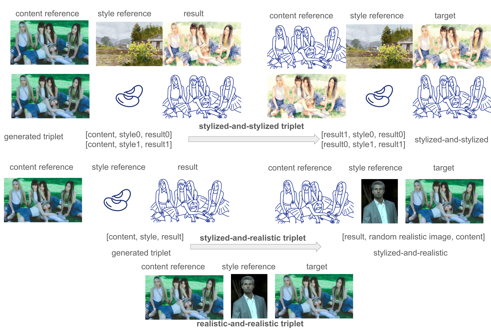
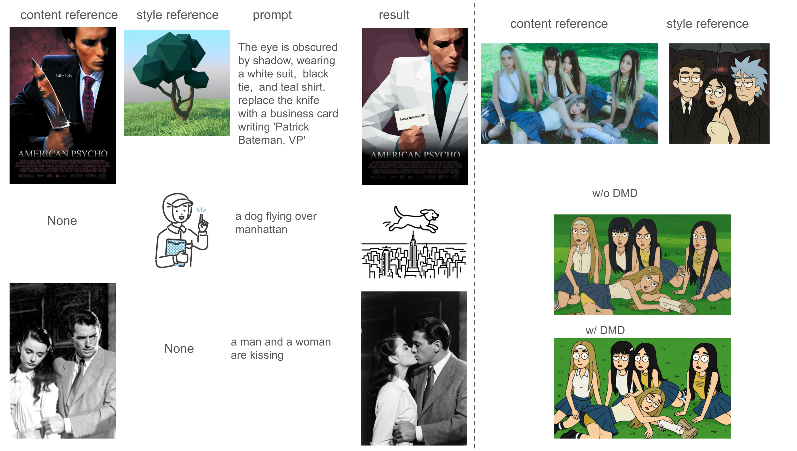

Abstract
Given a content reference and a style reference, content-preserving style transfer requires the model to generate stylized outputs with content and style consistency. We introduced TeleStyle V1 to tackle this problem. However, TeleStyle V1 is trained with photorealistic content reference and artistic style reference, which makes it incapable to cope with artistic content reference and realistic style reference in most cases. In this paper, we designed a Self-Distillation data synthesis strategy to construct such triplets from TeleStyle V1. Trained with such self-distilled triplets, our TeleStyle V2 supports Content-Style references in the forms of Realistic-and-Realistic (RnR), Realistic-and-Stylized (RnS), Stylized-and-Realistic (SnR), Stylized-and-Stylized (SnS). In addition, we found Distribution Matching Distillation could preserve the general text-guided image editing capability of the foundation model and fix the content consistency degradation caused by SFT process. Through quantitative evaluations, our TeleStyleV2-QIE-2509-DMD performs at least on par with Qwen-Image-Edit-2509-DMD, demonstrating strong general image editing skills beyond content-preserving style transfer. We observed the content/style reference order confusion problem in TeleStyle V1 and further introduced prompt enhancer to solve it. TeleStyle V2 uses Qwen-Image-Edit's VLM encoder, Qwen2.5-VL-7B, to generate content prompt and style prompt for free. TeleStyle V2 could achieve comparable style transfer performance with state-of-the-art commercial model, gemini-3-pro-image-preview.
Self Distillation Triplet Construction

We construct self-distillation triplets with TeleStyle v1, to enable TeleStyle v2 coping with stylized content reference and realistic style reference, beyond realistic content reference and stylized style reference setting in TeleStyle v1. Please note that due to privacy concerns, we use idols and actors' pictures in this figure for demonstration. They don't exist in our training set. Our training set is built with amateurs photos, which are not shown due to privacy reasons.
Distribution Matching Distillation

With Distribution Matching Distillation (DMD) models of Qwen-Image-Series applied to TeleStyle, we could hit two birds with one stone. The inference cost is reduced 10 times, and the content consistency and vanilla image editing capability of Qwen-Image-Editing series are preserved, even strengthened. TeleStyle could conduct content-preserving style transfer and text-guided image editing in one run (the first example in Figure \ref{figure_dmd}). In addition, TeleStylev2 accepts optional number of reference images. For example, it works on style reference + prompt scenario by providing only one style reference. It also works on traditional text-guided image editing task by providing one content reference. We also compare TeleStyle v2 with and without DMD in Figure \ref{figure_dmd}. TeleStyle v2 works without DMD, though the aesthetics could drop and the image could be distorted sometimes. It is worth noting that TeleStyle v2 boosts Qwen-Image-Edit series on style-related tasks for text-guided image editing, even without being trained on this text-guided task.
TeleStyle V2 Tech Report
BibTeX
@article{telestylev2,
title={TeleStyle V2: Beyond Content-Preserving Style Transfer with Self-Distillation and Distribution-Matching-Distillation},
author={Shiwen Zhang, Yifan Xu, Haibin Huang, Chi Zhang, Xuelong Li},
journal={TeleAI},
year={2026},
}